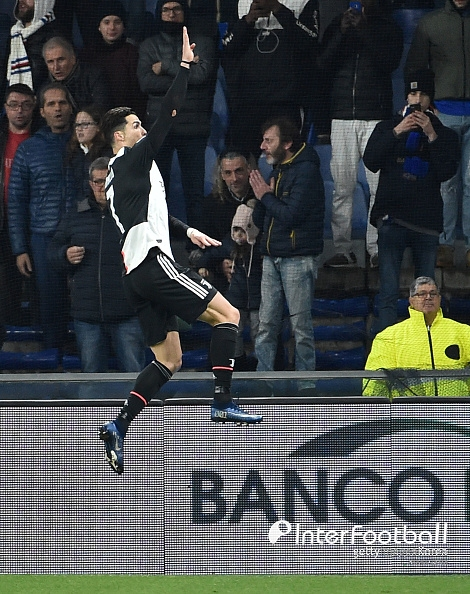

HTML이란 무엇인가?
- html
- css
- javascript
[인터풋볼] 윤효용 기자= 크리스티아누 호날두의 골에 마우리시오 사리 감독도 깜짝 놀랐다.

유벤투스는 19일 새벽(한국시간) 이탈리아 루이지 페라리스 구장 열린 2019-20시즌 이탈리아 세리에A 17라운드 원정 경기에서 삼프도리아에 2-1로 승리하며 선두를 탈환했다.
이날 유벤투스를 승리를 이끈 것은 바로 호날두였다. 유벤투스는 파울로 디발라의 선제골로 앞서갔지만 전반 35분 동점골을 허용했다.
그러나 전반 종료 직전, 호날두가 엄청난 점프력으로 헤딩 결승골을 넣으면서 승부를 결정지었다.
호날두의 골에 모두가 열광했다.
골 장면에서 호날두는 무려 2.6미터를 점프했고, 체공시간도 1.5초를 유지한 것으로 알려졌다. 호날두는 경기 후 공식 인터뷰에서 "멋진 골이었다. 팀에 승점 3점을 가져와 기쁘고, 유벤투스 우승에 보탬이 되길 원한다"고 말했다.
사리 감독도 호날두의 골에 깜짝 놀랐다.
사리 감독은 "호날두 골을 봤을 때 내가 무슨 생각한 줄 아나? 'FuXX, 엄청난 골이야'가 입 밖으로 나왔다"며 감탄했다.
사진=게티이미지
▶ [인터풋볼 인기 영상 보러 가기]
Copyright ⓒ 인터풋볼. 무단전재 및 재배포 금지
This is a paragraph.
This is another paragraph.